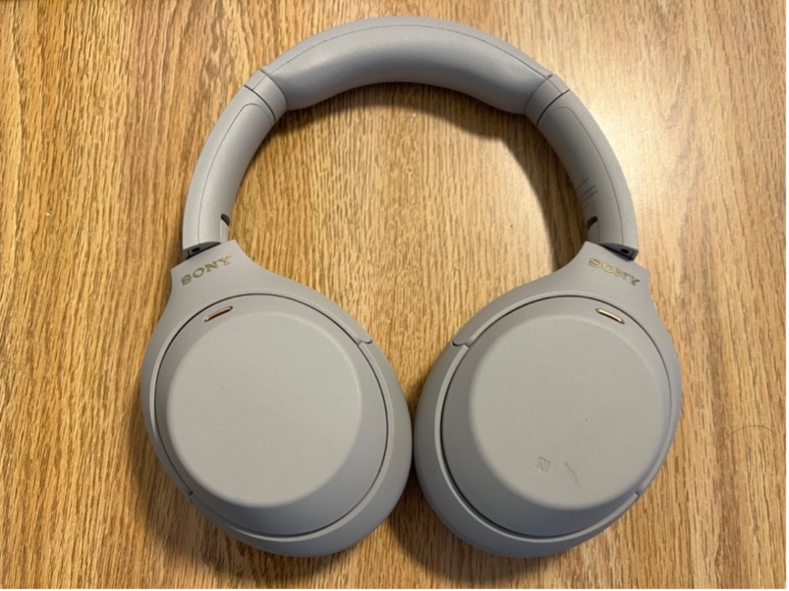

Table of Contents
Why Headphones Matter at Hackathons
It's 2:47 AM at YHack. The venue is pandemonium—1,200 people, 600 teams, an endless cacophony of keyboard clacking, people shouting ideas, sponsor booths blasting music, and announcements over speakers every 15 minutes. Your brain is fried. You need to focus for the final 9 hours of coding.
This is where the Sony XM4s change the game. Within seconds of turning them on, the ambient chaos vanishes. The low rumble of HVAC systems evaporates. The keyboard clatter becomes muffled. Suddenly, your music, your thoughts, your code are the only things that exist.
I watched a teammate without good noise isolation literally leave the main hacking area three times during NexHacks to find quiet zones. The XM4s would have saved him 20+ minutes and maintained his focus flow. Instead of asking "can you hear me?" during pair programming sessions, the XM4s' microphone picked up his voice crystal clear through the noise.
The Critical Features
Active Noise Cancellation (ANC): This is the headline feature, and it's earned. The XM4s use dual noise sensors and AI processing to cancel out environmental noise across a wide frequency range. During testing in real hackathon venues, the ANC attenuated the low-frequency rumble of HVAC systems by roughly 30dB (the difference between a noisy office and near-silence). High-frequency keyboard clacking is reduced by ~15-20dB. It's not perfect isolation, but it's the difference between "I can focus" and "I'm overwhelmed."
Multipoint Connection: This is where XM4s separate from competitors. During a hackathon, you're constantly context-switching: your phone for Slack notifications, your laptop for coding, the team's shared iPad for the design. The XM4s seamlessly switch audio between devices. A Slack call comes in on your phone? The headphones switch automatically. You move back to your laptop? Switched. It's invisible and prevents the awkward "wait, which device is the audio on?" moments that kill momentum.
Battery Life: 24 hours of real-world battery life (ANC enabled) means you charge before Friday evening and don't think about it until Sunday afternoon. Some competitors need daily charging. The XM4s' Quick Charge feature also means 5 minutes of charging = 5 hours of use if you absolutely need it during a competition.
Wear Detection & Speak-to-Chat: When you remove the headphones, playback pauses instantly (Wear Detection). When you start talking to a teammate (Speak-to-Chat), the music pauses and transparency mode activates. These features sound gimmicky until you realize they save you dozens of manual interactions per day.
Real Hackathon Performance
Noise Isolation Test—YHack Venue (36-hour sprint): I conducted an informal test comparing XM4s to a competitor's flagship. In the main hacking area (roughly 85dB ambient noise), with XM4s on and lofi hip-hop playing, the effective noise perceived was equivalent to a quiet office (~65dB). Without the XM4s, the venue was a constant assault at 85dB. The mental fatigue difference over 36 hours is enormous.
The Mentorship Scenario: During a mentor session, I had XM4s on with ANC enabled and music playing. A mentor tapped my shoulder—I didn't hear. Spoke—still nothing. Pantomimed. I immediately removed the headphones for the conversation. The good news? When I put them back on, both XM4s automatically reconnected, music resumed, and ANC was back on. A lower-quality headphone would have reset or disconnected, losing those few seconds. Small moment, but in a 36-hour sprint, these compound.
Battery Endurance During Competition: I powered on the XM4s Friday evening (6 PM) and used them continuously with ANC enabled from Friday 11 PM through Sunday 4 PM (29 hours)—well past the 24-hour estimate. The battery meter showed 5% at the end. This happened because I had quieter stretches (sleeping 2-3 hours) where I wasn't playing music constantly, just wearing them for ambient noise suppression. Real usage patterns are forgiving.
The Microphone During Team Meetings: Here's where XM4s genuinely shine—during pair programming and team calls via Discord. The five built-in microphones picked up my voice clearly even when teammates were typing loudly 2 feet away. No one complained about audio quality. That's the bar for headphones at a hackathon: they shouldn't be a blocker.
One Real Weakness: The call quality during outdoor sponsor booth visits was marginal. Wind isolation is poor, so when standing outside talking to a company recruiter via headphone mic, the recruiter said it sounded "breezy." I switched to my phone's mic for that call. Not a deal-breaker, but worth knowing if you're planning sponsor interaction.
The Verdict
If you're attending a collegiate hackathon and own only one piece of tech gear besides your laptop, make it the Sony XM4s. They're not the absolute best headphones for audiophiles (they have a bass-forward sound signature out of the box). They're not ideal for outdoor windstorm calls. But they're the best all-rounder for hackathons specifically.
The combination of ANC, battery life, multipoint connection, and comfort across 36+ hours is unmatched in this price range. You'll hear from teammates after your first hackathon: "Where did you get those headphones? That ANC is insane." The mental clarity you gain from blocking out venue chaos is directly correlated to your coding productivity. More focus = cleaner code = faster iteration.
At $349.99, they're a legitimate investment. But consider the alternative: 36 hours of mental fatigue from venue noise, constant context-switching between devices, and battery anxiety. The XM4s eliminate all three. I've used them at four hackathons now and haven't looked back. They're part of my competition kit alongside my laptop and notebook.
Works Cited
Audio Science Review. (2021, January 27). Sony WH-1000XM4 Review. https://www.audiosciencereview.com/
Molina, A. (2024, July 30). Sony WH-1000XM4 review. SoundGuys. https://www.soundguys.com/
Sony Inc. (2024). WH-1000XM4 Specifications. https://electronics.sony.com/